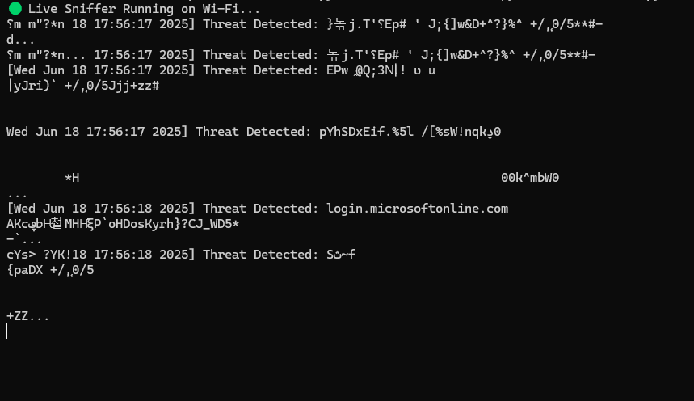

Browser-Level Surveillance Detection
A live attack is happening right now — and it’s moving through your browser. Not malware. Not phishing. Actual script-layer probes operating silently through websites you trust. One of the primary techniques involves using the browser to scan for stored credentials, and it’s happening globally without public acknowledgment or tooling to stop it.
Project SHOMER is built to detect and record those behaviors. In testing, it captured real traffic containing multilingual characters, obfuscated payloads, and system-level fallback triggers. These are indicators of extremely sophisticated activity — the kind usually associated with national-level attackers.
This isn’t a concept. This is real. The screenshot below is a live capture from our system. What you’re seeing shouldn’t be in a normal browser session — foreign language payloads mixed with login probes from Microsoft endpoints.
These are tools built by Project7xbus.com.